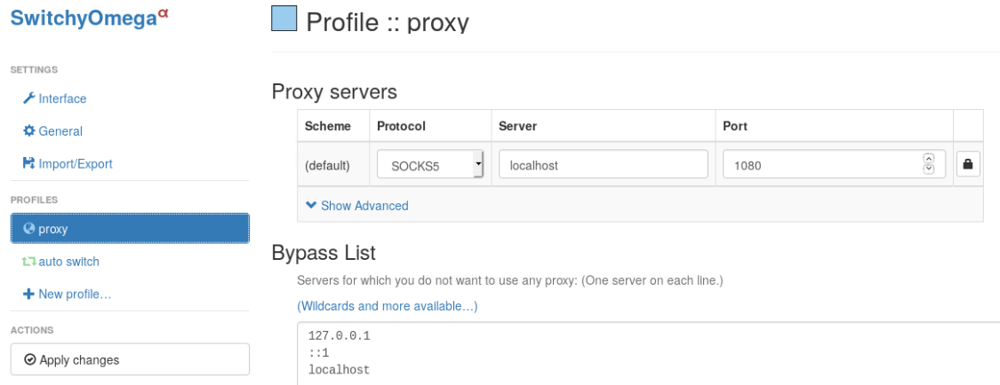
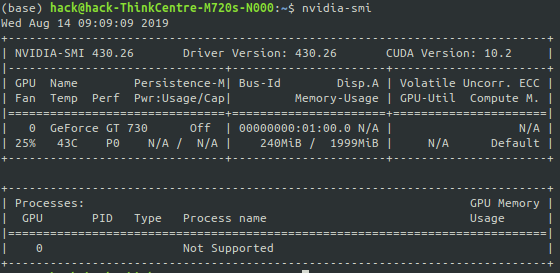
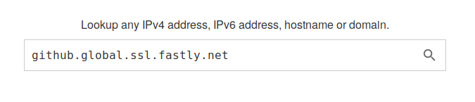

Table of Contents
- 1. Kaggle Api
- 2. VPN: v2ray
- 3. Python With Matlab
- 4. NFS
- 5. Firefox webgl
- 6. Emacs
- 7. CUDA
- 8. YOLO compliling with CUDA
- 9. YOLO compliling with OpenCV
- 10. Git speed up
- 11. DeepLab
- 12. Tensorflow GPU
- 13. Python IDE
- 14. Sticky Notes
- 15. Teamviewer
- 16. Charm Inotify Watches Limit
- 17. Git pull and push buffer
- 18. Netron
- 19. Pip with proxy
- 20. Keras with gpu
- 21. Anaconda
- 22. PyCharm
- 23. pinyin
- 24. Lilypond
- 25. Frescobaldi
- 26. Git
- 27. Handle lid witch
- 28. extensions
- 29. adobe flash play
- 30. VMware
- 31. Failed to load module "canberra-gtk-module"
- 32. PostgreSQL
- 33. Inhibit Root Login
- 34. Add Sudo
- 35. Delete Password
- 36. Proxy
- 37. Lid Swith
- 38. Apache Httpd
- 39. Ssh Alive Interval
- 40. Filezilla
- 41. Sdkman
- 42. Gradle
- 43. Teamviewer
- 44. Virtual Machine Manager
- 45. Vmware
- 46. Gnome Extension
1. Kaggle Api
pip install kaggle
goto https://www.kaggle.com/hackchyson/account
select 'Create New API Token'
place the downloaded kaggle.json in ~/.kaggle/
chmod 600 ~/.kaggle/kaggle.json
2. VPN: v2ray
wget https://install.direct/go.sh
sudo bash go.sh
2.1. resources
2.2. server
emacs /etc/v2ray/config.json
{
"inbounds": [{
"port": 10086, // 服务器监听端口，必须和上面的一样
"protocol": "vmess",
"settings": {
"clients": [{ "id": "9d19a0a7-896e-48e5-9b6a-4b63937feda2",
"alterId": 64
}]
}
}],
"outbounds": [{
"protocol": "freedom",
"settings": {}
}],
"log": {
"loglevel": "warning", // 日志级别
"access": "/var/log/v2ray/access.log",
"error": "/var/log/v2ray/error.log"
}
}
sudo systemctl start v2ray
2.3. client
emacs /etc/v2ray/config.json
{
"inbounds": [
{
"port": 1080, // 监听端口
"protocol": "socks", // 入口协议为 SOCKS 5
"sniffing": {
"enabled": true,
"destOverride": ["http", "tls"]
},
"settings": {
"auth": "noauth" //socks的认证设置，noauth 代表不认证，由于 socks 通常在客户端使用，所以这里不认证
}
}
],
"outbounds": [
{
"protocol": "vmess", // 出口协议
"settings": {
"vnext": [
{
"address": "47.52.165.236", // 服务器地址，请修改为你自己的服务器 IP 或域名
"port": 10086, // 服务器端口
"users": [
{
"id": "9d19a0a7-896e-48e5-9b6a-4b63937feda2", // 用户 ID，必须与服务器端配置相同
"alterId": 64 // 此处的值也应当与服务器相同
}
]
}
]
}
}
],
"log": {
"loglevel": "warning", // 日志级别
"access": "/var/log/v2ray/access.log",
"error": "/var/log/v2ray/error.log"
}
}
2.4. client macos
brew cask install v2rayx
(or https://github.com/Cenmrev/V2RayX/releases)
2.5. notice
阿里云的服务器需要配置安全组，打开你配置的10086 tcp端口
一定要看日志，debug step by step!
2.6. firefox add-on
使用这个软件可以避免使用全局proxy，
达到国外的网站使用proxy，本地网站不使用proxy.
Proxy SwitchOmega

3. Python With Matlab
- 中国网址：https://ww2.mathworks.cn/ 下载matlab
- 安装 sh install
- 启动matlab,输入matlabroot得到matlab的安装路径
- cd <matlabroot>/extern/engines/python
- python setup.py install (使用你自己环境的python)
- call
在您的当前文件夹中名为 triarea.m 的文件中创建一个 MATLAB 脚本。
b = 5;
h = 3;
a = 0.5*(b.* h)
保存该文件后，启动 Python 并调用该脚本。
import matlab.engine
eng = matlab.engine.start_matlab()
eng.triarea(nargout=0) # no argument output
a =
7.5000
指定 nargout=0。尽管脚本会打印输出，但它不会向 Python 返回任何输出参数。
4. NFS
server:
yum install nfs rpcbind
emacs /etc/exports
/home/hack/share 121.69.48.143(rw,norootsquash,noallsquash,async)
systecmtl start rpcbind
systemctl start nfs
exportfs -a
client:
sudo apt install nfs-common
showmount -e chyson.net
emacs /etc/fatab
4.1. bug
mount.nfs: access denied by server while mounting chyson.net:/home/hack/share
debug:
[root@iZj6c5dh77a6fzqwrfrmsgZ hack]# cat /var/log/messages | grep mount
Jul 31 13:46:11 iZj6c5dh77a6fzqwrfrmsgZ rpc.mountd[19783]: Version 1.3.0 starting
Jul 31 13:47:07 iZj6c5dh77a6fzqwrfrmsgZ rpc.mountd[19783]: Caught signal 15, un-registering and exiting.
Jul 31 13:47:07 iZj6c5dh77a6fzqwrfrmsgZ rpc.mountd[19883]: Version 1.3.0 starting
Jul 31 13:47:29 iZj6c5dh77a6fzqwrfrmsgZ rpc.mountd[19883]: Caught signal 15, un-registering and exiting.
Jul 31 13:47:34 iZj6c5dh77a6fzqwrfrmsgZ rpc.mountd[19943]: Version 1.3.0 starting
Jul 31 14:12:20 iZj6c5dh77a6fzqwrfrmsgZ rpc.mountd[19943]: refused mount request from 121.69.48.143 for /home/hack/share (/home/hack/share): illegal port 3480
Jul 31 14:13:52 iZj6c5dh77a6fzqwrfrmsgZ rpc.mountd[19943]: refused mount request from 121.69.48.143 for /home/hack/share (/home/hack/share): illegal port 9458
Jul 31 14:15:27 iZj6c5dh77a6fzqwrfrmsgZ rpc.mountd[19943]: refused mount request from 121.69.48.143 for /home/hack/share (/home/hack/share): illegal port 7316
Jul 31 14:19:05 iZj6c5dh77a6fzqwrfrmsgZ rpc.mountd[19943]: Caught signal 15, un-registering and exiting.
Jul 31 14:19:05 iZj6c5dh77a6fzqwrfrmsgZ rpc.mountd[20240]: Version 1.3.0 starting
Jul 31 14:19:36 iZj6c5dh77a6fzqwrfrmsgZ rpc.mountd[20240]: refused mount request from 121.69.48.143 for /home/hack/share (/home/hack/share): illegal port 5338
Jul 31 14:22:19 iZj6c5dh77a6fzqwrfrmsgZ rpc.mountd[20240]: refused mount request from 121.69.48.143 for /home/hack/share (/home/hack/share): illegal port 6186
Jul 31 14:23:23 iZj6c5dh77a6fzqwrfrmsgZ rpc.mountd[20240]: Caught signal 15, un-registering and exiting.
Jul 31 14:23:23 iZj6c5dh77a6fzqwrfrmsgZ rpc.mountd[20306]: Version 1.3.0 starting
Jul 31 14:31:32 iZj6c5dh77a6fzqwrfrmsgZ rpc.mountd[20306]: Caught signal 15, un-registering and exiting.
Jul 31 14:31:32 iZj6c5dh77a6fzqwrfrmsgZ rpc.mountd[20403]: Version 1.3.0 starting
5. Firefox webgl
type
about: config
in the address column
webgl.force-enabled true
6. Emacs
6.1. Emacs
apt install -y emacs
6.2. Emacs Org PDF
sudo apt install texlive-latex-recommended
sudo apt install texlive-latex-extra
(install pdflatex command)
6.3. Emacs Chinses Font
sudo apt install latex-cjk-all
6.4. Emacs with tikz
M-x package-install siteproc
(I don't know whether it is the reason, I just can use tikz directly)
6.5. latex
sudo apt install auctex
7. CUDA
series:
- Tesla for technical and scientific computing
- Quadro for professional visualization
- Jetson for AI autonomous machines
https://developer.nvidia.com/cuda-downloads
- `sudo dpkg -i cuda-repo-ubuntu1804-10-1-local-10.1.168-418.671.0-1amd64.deb`
- `sudo apt-key add /var/cuda-repo-<version>/7fa2af80.pub`
- `sudo apt-get update`
- `sudo apt-get install cuda`
There is a problem:
NVIDIA-SMI has failed because it couldn’t communicate with the NVIDIA driver. Make sure that the latest NVIDIA driver is installed and running.
I just restarted the system, it worked.

8. YOLO compliling with CUDA
https://pjreddie.com/darknet/install/#cuda
- Install CUDA
- Alter Makefile
GPU=1
- make
problem:
/bin/sh: 1: nvcc: not found Makefile:92: recipe for target 'obj/convolutional_kernels.o' failed make: *** [obj/convolutional_kernels.o] Error 127
#NVCC=nvcc NVCC=/usr/local/cuda-10.1/bin/nvcc
9. YOLO compliling with OpenCV
- Alter
10. Git speed up
- visit https://www.ipaddress.com/
- search the fastest ip

- add the following line into /etc/hosts
151.101.185.194 github.global.ssl.fastly.net
11. DeepLab
11.1. Total Tutorial
11.2. Installlation
11.2.1. Dependencies
To check if you have install a package:
pip list | grep -i <package>
To install a package:
pip install <package>
I executed the following commands: (if the package is install, it will skip, so it does not matter)
pip install pillow jupyter numpy matplotlib prettytable
11.2.2. Add libraries to PYTHONPATH
DeepLab weights: http://download.tensorflow.org/models/deeplabv3_pascal_trainval_2018_01_04.tar.gz
# From models/research/ export PYTHONPATH=$PYTHONPATH:`pwd`:`pwd`/slim
11.2.3. Testing the Installation
# From tensorflow/models/research/ python deeplab/model_test.py
11.3. Running DeepLab on PASCAL VOC 2012 Semantic Segmentation Dataset
11.3.1. Download dataset and convert to TFRecord
# From the tensorflow/models/research/deeplab/datasets directory. sh download_and_convert_voc2012.sh
The converted dataset will be saved at ./deeplab/datasets/pascalvocseg/tfrecord.
11.3.2. Recommended Directory Structure for Training and Evaluation
+ datasets
+ pascal_voc_seg
+ VOCdevkit
+ VOC2012
+ JPEGImages
+ SegmentationClass
+ tfrecord
+ exp
+ train_on_train_set
+ train
+ eval
+ vis
12. Tensorflow GPU
pip install tensorflow-gpu
If the above installation is too slow, you can download the corresponding file and install it like the following:
pip install tensorflow_gpu-1.14.0-cp37-cp37m-manylinux1_x86_64.whl
13. Python IDE
13.1. Install Packages
pip install elpy rope_py3k jedi # python3
M-x package-install RET
13.2. Elpy
Emacs is distributed with a python-mode (python.el) that provides indentation and syntax highlighting.
elpy (Emacs Lisp Python Environment) package provides us with a near complete set of Python IDE features.
14. Sticky Notes
Applications -> Search sticky notes
15. Teamviewer
dpkg: dependency problems prevent configuration of teamviewer: teamviewer depends on qtdeclarative5-controls-plugin (>= 5.5) | qml-module-qtquick-controls (>= 5.5); however: Package qtdeclarative5-controls-plugin is not installed. Package qml-module-qtquick-controls is not installed.
package of architecture of 32 is needed.
sudo dpkg --add-architecture i386 sudo apt-get update sudo apt -f install sudo dpkg -i teamviewer
16. Charm Inotify Watches Limit
https://confluence.jetbrains.com/display/IDEADEV/Inotify+Watches+Limit
sudo echo "fs.inotify.maxuserwatches = 524288" >> /etc/sysclt.d/charm.conf
sudo sysctl -p –system
restart charm
17. Git pull and push buffer
error: RPC failed; curl 56 GnuTLS recv error (-54): Error in the pull function. fatal: The remote end hung up unexpectedly fatal: early EOF fatal: index-pack failed
git config –global http.postBuffer 200000000
git config –global http.pullBuffer 200000000
18. Netron
19. Pip with proxy
pip install tensorflow -i https://pypi.tuna.tsinghua.edu.cn/simple
pip -h pip install -h
Or alter the configure file:
mkdir ~/.pip emacs ~/.pip/pip.conf # [global] # index-url=https://mirrors.aliyun.com/pypi/simple
20. Keras with gpu
pip uninstall tensorflow tensorflow-gpu keras pip install tensorflow-gpu -i https://pypi.tuna.tsinghua.edu.cn/simple pip install keras # run your program watch -n 3 nvidia-smi # to watch gpu useage
21. Anaconda
bash ~/Downloads/Anaconda3-5.3.1-Linux-x8664.sh
source ~/.bashrc
22. PyCharm
sudo tar -zxvf pycharm-community-2018.3.1.tar.gz
cd pycharm-community-2018.3.1/bin
./pycharm.sh
22.1. template
author and time template to simplify review program
File -> Setting -> Editor -> File and Code Templates -> Files -> Phthon Script
22.2. add desktop icon
Tools -> Create Desktop Entry
22.3. emacs keymap
File -> Settings -> Keymap
Reformat Code: C-M-\
23. pinyin
Software Center -> pinyin
24. Lilypond
apt install lilypond
25. Frescobaldi
apt install frescobaldi (fri sker 'bal di)
26. Git
apt install -y git
27. Handle lid witch
emacs /etc/systemc/login.conf
HandleLidSwitch=lock
systemctl restart systemd-logind.service
28. extensions
Alterative Tab
29. adobe flash play
https://get.adobe.com/flashplayer/
tar -zxvf flashplayernpapilinux.x8664.tar.gz
sudo cp libflashplayer.so usr/lib/mozilla/plugins (firefox version 60.4esr)
cp -r usr/* /usr
restart firefox
30. VMware
https://www.vmware.com/products/workstation-pro/workstation-pro-evaluation.html
chmod +x <VM>
sudo ./<VM>
31. Failed to load module "canberra-gtk-module"
sudo apt-get install libcanberra-gtk-module
32. PostgreSQL
apt install postgresql-11 # Fri Oct 18 13:00:18 CST 2019
33. Inhibit Root Login
vi /etc/ssh/sshdconfig
PermitRootLogin no
34. Add Sudo
visudo
michael ALL=(ALL) NOPASSWD:ALL
35. Delete Password
passwd -d michael
36. Proxy
/etc/yum.conf
proxy=http://10.4.200.21:18765
proxyusername=***
proxypassword=***
37. Lid Swith
emacs /etc/systemd/logind.conf
HandleLidSwitch=ignore
systemctl restart systemd-logind
38. Apache Httpd
to allow directory access and specify the charset:
<Directory "/var/www/html">
Options All
IndexOptions Charset=UTF-8
AllowOverride None
Require all granted
</Directory>
39. Ssh Alive Interval
vi /etc/ssh/sshdconfig
ClientAliveCountMax 30
(minutes)
40. Filezilla
yum -y install epel-release
yum -y install filezilla
41. Sdkman
curl -s "https://get.sdkman.io" | bash
42. Gradle
sdk install gradle 4.7
43. Teamviewer
yum install teamview.rpm
43.1. problem
Requires: libQt5WebKitWidgets.so.5()(64bit) >= 5.5
Requires: libQt5WebKit.so.5()(64bit) >= 5.5
43.2. solution
go to
http://dl.fedoraproject.org/pub/epel/7/x86_64/Packages/q/
to download the corresponding rpm and install
44. Virtual Machine Manager
Software -> search virtual
45. Vmware
45.1. install
- download
VMware-Workstation-Full-14.1.3-9474260.x8664.bundle
- add execute permission
chmod +x VMware-Workstation-Full-14.1.3-9474260.x8664.bundle
- install
./VMware-Workstation-Full-14.1.3-9474260.x8664.bundle
45.2. uninstall
vmware-installer –uninstall-product vmware-workstation
46. Gnome Extension
Extending the GNOME 3 destop
http://extensions.gnome.org
Managing shell extensions
Software –> Add-on –> Extension Setting
46.1. see all the shell extensions
rpm -qa | grep gnome-shell